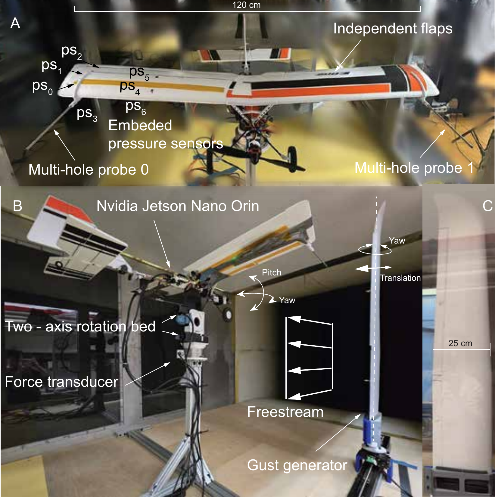
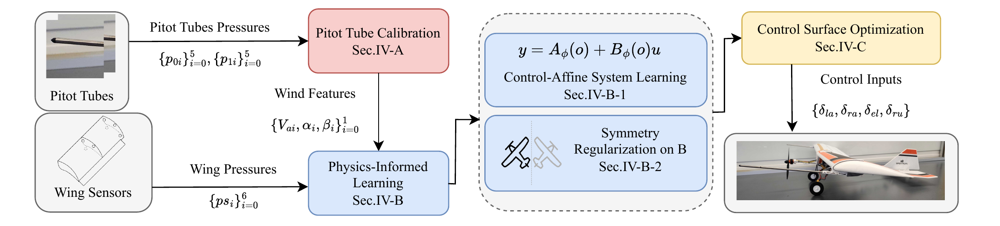
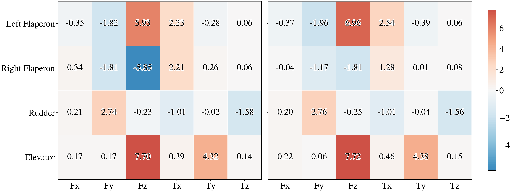
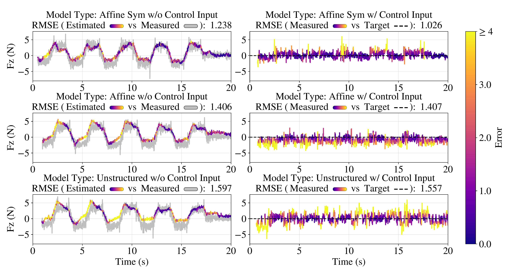

We present an end-to-end sensing-to-control pipeline for fixed-wing UAVs combining bio-inspired hardware, physics-informed dynamics learning, and convex control allocation. Inspired by the narwhal's tusk, we mount multi-hole probes upstream of the airframe to sense "clean" airflow, reducing force-estimation error by 25–30%. A control-affine model with soft left–right symmetry regularization maps probe readings and sparse wing pressures to aerodynamic wrenches. Wind-tunnel experiments show the proposed model degrades only ~12% under distribution shift versus 44% for an unstructured baseline, with 27–34% lower tracking error.


Data-driven mapping from normalized probe pressures to airspeed and flow angles (Va, α, β), robust across operating conditions.
Control-affine model y = Aφ(o) + Bφ(o)u with soft symmetry regularizer to resolve flaperon–wing-pressure confounding.
Closed-form regularized least-squares optimizer balancing force tracking, smoothness, and trim adherence.
Without regularization the model assigns ~3.8x more lift sensitivity to the left flaperon than the right. The symmetry prior restores physically consistent control effectiveness.

Unstructured RMSE grows 44% from 10 to 14 m/s. Affine Sym grows only 12%.
| Wind Speed | Affine Sym | Affine | Unstructured |
|---|---|---|---|
| 7 m/s | 0.521 | 0.531 | 0.521 |
| 9 m/s | 0.495 | 0.493 | 0.484 |
| 10 m/s (train) | 0.522 | 0.450 | 0.442 |
| 14 m/s | 0.592 | 0.598 | 0.637 |
Estimation RMSE (N / N·m). Bold = best per row.
Affine Sym reduces Fz tracking RMSE by 27% vs. Affine and 34% vs. Unstructured.

@inproceedings{xie2026narwhal,
title={A Narwhal-Inspired Sensing-to-Control Framework for Small Fixed-Wing Aircraft},
author={Xie, Fengze and Fan, Xiaozhou and Schuster, Jacob and Yue, Yisong and Gharib, Morteza},
booktitle={IEEE International Conference on Robotics and Automation (ICRA)},
year={2026}
}